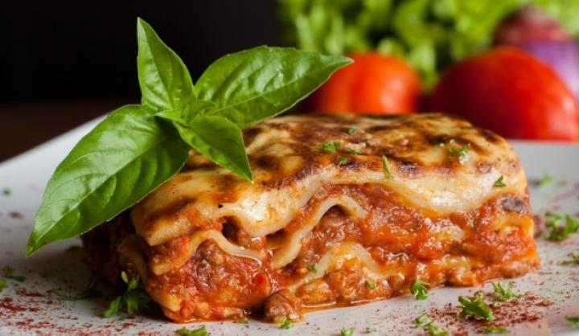

Lasagne
Igazi nyári hangulatot idéznek az olyan mediterrán receptek, mint a paradicsomos húsgombóc, a görög muszaka, vagy akár ez a szuper lasagne. Lehet, hogy a nyaralás még odébb van, de ezzel az egyszerűen elkészíthető olasz tészta recepttel már most elkezdhetitek a ráhangolódást.
#Hozzávalók
Hozzávalók a raguhoz:
- 1 kis fej vöröshagyma felaprítva
- 1 gerezd fokhagyma
- 2 MAGGI bolognai paradicsomszósz
- 40 dkg darált marhahús
- 1-2 dl vörösbor
- só, bors ízlés szerint
- oregánó ízlés szerint
- 2-3 ek olaj
Hozzávalók a BESAMELHEZ:
- 5 dkg liszt
- 5 dkg vaj
- 7 dl tej (ne legyen hideg)
- Só, bors ízlés szerints
Hozzávalók a TÉSZTA ÖSSZEÁLLÍTÁSÁHOZ:
- 250 g száraz lasagne tészta
- 100 g parmezán
- 2 ek olaj
#Elkészítése
Olajon párold üvegesre a vöröshagymát és a fokhagymát, add hozzá a darált húst, pirítsd, amíg kifehéredik, sózd, borsozd. Öntsd a húsra a paradicsomszószt és a vörösbort, fűszerezd egy kevés oregánóval. Lassú tűzön, fedő alatt, rendszeresen kevergetve főzd kb. 20-25 percet. Míg a ragu fő, készítsd el a besamelt. Ehhez egy lábosban kis lángon olvaszd meg a vajat, szórd rá a lisztet, keverd össze, és folyamatos keverés mellett fokozatosan add hozzá a szobahőmérsékletű tejet. Ha becsomósodna, ne ijedj meg, keverd gyorsan tovább, amíg ismét csomómentes lesz. Ha az összes tejet felhasználtad, főzd még egy pár percig, sóval, borssal ízesítsd. Ha a ragu, és a besamel is kész, állítsd össze a tésztát: olajozz ki egy hőálló tálat, vagy egy tepsit. Tegyél az aljára tésztalapot, teríts szét rajta vékonyan egy kevés bolognai ragut, majd tegyél rá egy újabb tésztalapot. Erre önts bőségesen besamelt majd bolognai ragut, helyezz rá egy tésztalapot, majd ismét a két szószt. Szórd meg parmezánnal, majd tedd rá az utolsó tésztalapot, amire már csak besamelt tegyél, majd a maradék parmezánt. 180 fokra előmelegített sütőben süsd kb. 40 percig, míg aranybarna lesz.